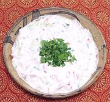

|
Cuke Tomato Yogurt SaladIndia, Chettinad - Vellarikkai Thakkali Thayir Pachadi | ||||
| Serves: Effort: Sched: DoAhead: |
4 side * 1-1/4 hrs Yes |
A very refreshing salad, similar to a Rayta but with more vegies. It makes a wonderful side dishes to spicy Indian dishes, or a lunch salad for two. A fine party salad if you multiply the recipe. | |||
|
6 4 2 ------- 1/2 1/2 1/2 ------- 1-1/2 ------- ar |
oz oz oz --- t t t --- c --- |
Cucumbers (1) Tomato Onion, red -- Spicing Pepper, black Cumin Seed Salt ---------- Yogurt (2) -- Garnish Cilantro |
Weights for all vegetables are as chopped. By volume it's about 1 cup, 1/2 cup, 1/4 cup. Make: - (1-1/4 hrs - 15 min work)
|